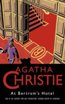
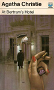
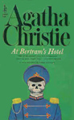
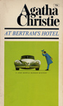

At Bertram's Hotel is a work of detective fiction by Agatha Christie and first published in the UK by the Collins Crime Club on 15 November 1965 and in the US by Dodd, Mead and Company the following year. It features the detective Miss Marple.
Miss Marple takes a two-week vacation in London, at Bertram's Hotel, where she stayed in her youth. The hotel has a personality of its own, and a niche clientele of important church people, older women who lived through the Edwardian age, and girls looking for a safe place to stay in London. Miss Marple enjoys her trips around London, and learns that she cannot go back, life moves forward. She witnesses the complex lives of an estranged mother and daughter and as always works with the police to solve crimes.




Screen Versions
A BBC television film adaptation from 1987 starred Joan Hickson in the title role as Miss Marple.
ITV broadcast its adaptation on 23 September 2007 as part of the third series of Agatha Christie's Marple, starring Geraldine McEwan. This version included many substantial changes to the plot, characters, atmosphere and the finale of the original novel.


Rashid Karapiet
Peter Davison
Richard Egerton
Randal Herley
Hannah Spearritt
Charlotte Barker
Georgia Allen